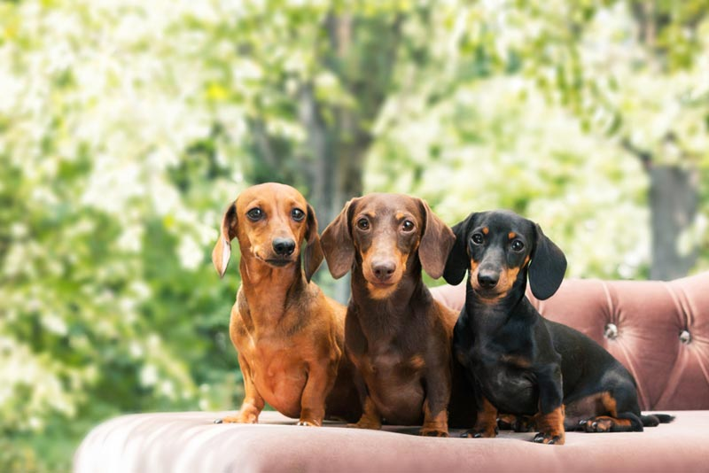

Pet Channel
| ดัชชุน (Dachshund) |
|  |
ลักษณะทั่วไป ดัชชุน รูปร่างเตี้ย ขาสั้น ตัวยาว แต่มีการพัฒนาของกล้ามเนื้อที่แน่นและแข็งแรง ลักษณะการเชิดศีรษะเต็มไปด้วยความกล้าหาญและมั่นใจ สีหน้าของดัชชุนแสดงออกซึ่งความฉลาด ทั้งๆ ที่ขาสั้นเมื่อเทียบกับความยาวของลำตัว แต่ดัชชุนด์ไม่เคยแสดงออกถึงลักษณะของความพิการ งุ่มง่ามหรือยืดยาดในการเคลื่อนไหว มีความฉลาด สดใสและกล้าหาญโดยไม่คำนึงถึงอันตราย มุ่งมั่นในการทำงานทั้งบนดินและใต้ดิน ประสาทสัมผัสทั้งหมดพัฒนาอย่างดี มีคุณสมบัติพิเศษสำหรับเกมการล่าสัตว์ใต้ดิน นอกจากนี้ ยังเต็มไปด้วยจิตวิญญาณในการล่าสัตว์ รูปร่างและจมูกที่เหมาะสม ทำให้ได้เปรียบเหนือพันธุ์อื่นทั้งหมดของสุนัขที่ใช้ในกีฬาการสะกดรอย |